Model Selection
NRES 746
Fall 2023
For those wishing to follow along with the R-based demo in class, click here for the companion R script for this lecture.
Model selection or model comparison is a very common problem in ecology- that is, we often have multiple competing hypotheses about how our data were generated and we want to see which model is best supported by the available evidence.
If we can describe our data generating process explicitly as a set of deterministic and stochastic components (i.e., likelihood functions), then we can use likelihood-based methods (e.g., LRT, AIC, BIC, Bayesian model selection) to infer which data generating model(s) could most plausibly have generated our observed data.
Principle of Parsimony (“Occam’s razor”)
We will discuss several alternative approaches to model selection in ecology. However, all approaches follow the same basic principle- that – all things equal, we should prefer the simpler model over any more complex alternative. This is known as the principle of parsimony.
Example data: Balsam fir data from NY
Bolker uses a study of balsam fir in New York to illustrate model selection. Perhaps it’s time to move on from Myxomatosis anyway…
Let’s load up the data first
# Load the balsam fir dataset (finally, no more rabbits and virus titers!)
library(emdbook)
data(FirDBHFec)
fir <- na.omit(FirDBHFec[,c("TOTCONES","DBH","WAVE_NON")])
fir$TOTCONES <- round(fir$TOTCONES)
head(fir)## TOTCONES DBH WAVE_NON
## 1 19 9.4 n
## 2 42 10.6 n
## 3 40 7.7 n
## 4 68 10.6 n
## 5 5 8.7 n
## 6 0 10.1 nWe can examine the fecundity (total cones) as a function of the tree size (DBH):
plot(fir$TOTCONES ~ fir$DBH) # fecundity as a function of tree size (diameter at breast height)
One additional point of complexity in this data set- some trees were sampled from areas that have undergone a recent wave-like die-off (recruitment of balsam fir tends to occur after die-offs, resulting in stands with most trees coming from the same cohort). Other trees were sampled from areas that have not undergone recent die-offs.
# tree fecundity by size, categorized into two site-level categories: "wave" and "non-wave"
ndx <- fir$WAVE_NON=="w" # logical vector indicating which observations were from "wave" sites
plot(fir$TOTCONES[ndx] ~ fir$DBH[ndx],xlab="DBH",ylab="Tot Cones")
points(fir$DBH[!ndx],fir$TOTCONES[!ndx],pch=4,col="red")
legend("topleft",pch=c(1,4),col=c("black","red"),legend=c("Wave","Non-wave"),bty="n")Let’s assume (following Bolker) that fecundity increases as a power-law relationship with DBH:
\(\mu = a\cdot DBH^{b}\)
Let’s also assume that the fecundity follows a negative binomial distribution:
\(Y = NegBin(\mu,k)\)
We can model each of these parameters (a, b, and k) separately for trees from wave and non-wave populations.
We can also run simpler models in which these parameters are modeled as the same for both populations.
Then we can ask the question: which model is the “best model”?
FULL MODEL
Here is a likelihood function for the full model – that is, the most complex model (6-dimensional likelihood surface):
# build likelihood function for the full model: CONES ~ negBINOM( a(wave)*DBH^b(wave), dispersion(wave))
NegBinomLik_full <- function(params){
wave.code <- as.numeric(fir$WAVE_NON) # convert to ones and twos # note: we are hard-coding the data into our likelihood function here!
a <- c(params[1],params[2])[wave.code] # a parameters (two for wave and one for non-wave)
b <- c(params[3],params[4])[wave.code] # b parameter (two for wave and one for non-wave)
k <- c(params[5],params[6])[wave.code] # over-dispersion parameters (two for wave and one for non-wave)
expcones <- a*fir$DBH^b # expected number of cones (deterministic component)
-sum(dnbinom(fir$TOTCONES,mu=expcones,size=k,log=TRUE)) # add stochastic component: full data likelihood
}
params <- c(a.n=1,a.w=1,b.n=1,b.w=1,k.n=1,k.w=1)
NegBinomLik_full(params)## [1] 1762.756We can fit the full model using “optim” (using a derivative based optimization routine), just like we have done before:
#### Find the MLE -----------------------
MLE_full <- optim(fn=NegBinomLik_full,par=c(a.n=1,a.w=1,b.n=1,b.w=1,k.n=1,k.w=1),method="L-BFGS-B")
MLE_full$par## a.n a.w b.n b.w k.n k.w
## 0.2875039 0.4083306 2.3554748 2.1487169 1.6545962 1.3250989MLE_full$value## [1] 1135.01REDUCED MODELS
Let’s run a simpler model now. This time, let’s model the b parameter as equal for wave and nonwave populations:
# build likelihood function for a reduced model: CONES ~ negBINOM( a(wave)*DBH^b, dispersion(wave))
NegBinomLik_constb <- function(params){
wave.code <- as.numeric(fir$WAVE_NON) # convert to ones and twos
a <- c(params[1],params[2])[wave.code] # a parameters
b <- params[3] # b parameter (not a function of wave/nonwave)
k <- c(params[4],params[5])[wave.code] # dispersion parameters
expcones <- a*fir$DBH^b
-sum(dnbinom(fir$TOTCONES,mu=expcones,size=k,log=TRUE))
}
params <- c(a.n=1,a.w=1,b=1,k.n=1,k.w=1)
NegBinomLik_constb(params)## [1] 1762.756And we can fit the full model using “optim”:
### Find the MLE
MLE_constb <- optim(fn=NegBinomLik_constb,par=c(a.n=1,a.w=1,b=1,k.n=1,k.w=1),method="L-BFGS-B")
MLE_constb$par## a.n a.w b k.n k.w
## 0.3477240 0.3217906 2.2699275 1.6530928 1.3230276MLE_constb$value## [1] 1135.134Let’s compute the -2 times the log likelihood (\(-2*log(likelihood)\)) of the two models at the MLE – That is, we compute \(-2*log(Lik@MLE)\) for each alternative model.
# compute -2*loglik for each model at the MLE
ms_full <- 2*MLE_full$value # this is 2 * min.nll = -2*logLik_at_MLE
ms_constb <- 2*MLE_constb$value
ms_full## [1] 2270.02ms_constb## [1] 2270.267Note here that the log-likelihood of the full model is lower (“better”: that is, the data are more likely to be produced under this model) than the the reduced model. This should always be the case- if not, something is wrong. That is, the plausibility of producing the observed data under the fitted model should always increase when more free parameters are added!
This is where the principle of parsimony comes into play!
What if we wanted to test which model was better supported by the evidence? One way is to use our old friend, the Likelihood Ratio Test (LRT)!
Likelihood-ratio test (frequentist solution)
We have encountered the LRT once before, in the context of generating confidence intervals from likelihood surfaces (at and near the MLE). The same principle applies for model selection. The LRT tests whether the extra goodness-of-fit of the full model is worth the extra complexity of the additional parameters.
As you recall, the likelihood ratio is defined (obviously) as the ratio of two likelihoods. The numerator represents the likelihood of a reduced model (fewer free parameters) that is nested within a full model – which in turn serves as the denominator:
\(\frac{Likelihood_{reduced}}{Likelihood_{full}}\)
Because the raw likelihood ratio under the null hypothesis does not have a known distribution, we first convert the likelihood ratio to -2X the difference in log likelihoods:
\(-2ln(\frac{Likelihood_{reduced}}{Likelihood_{full}})\)
Which can also be written as:
\(-2ln(Likelihood_{reduced}) - -2ln(Likelihood_{full})\)
When expressed this way, this likelihood ratio statistic (asymptotically) should be approximately Chi-squared distributed with df equal to the number of fixed dimensions (difference in free parameters between the full and reduced model).
The LRT can be used for two-way model comparison as long as one model is nested within the other (full model vs. reduced model). If the models are not nested then the LRT doesn’t really make sense.
# Likelihood-Ratio test (frequentist) -----------------------
Deviance <- ms_constb - ms_full
Deviance## [1] 0.2467524Chisq.crit <- qchisq(0.95,1)
Chisq.crit## [1] 3.841459Deviance>=Chisq.crit # perform the LRT## [1] FALSE1-pchisq(Deviance,1) # p-value## [1] 0.6193711# Visualize the likelihood ratio test- compare the observed deviance with the distribution of deviances expected under the null hypothesis
curve(dchisq(x,df=1),0,5)
abline(v=Deviance,col="red",lwd=4)Clearly, the gain in model performance is not worth the extra complexity in this case (the observed deviance could easily be produced by random chance!). Therefore, we favor the reduced model.
What about if we try a different reduced model? This time, we decide to fix the a, b, and k parameters, so the “wave” factor is not considered.
# Try a different reduced model: CONES ~ negBINOM( a*DBH^b, dispersion)
NegBinomLik_nowave <- function(params){
a <- params[1] # a parameters
b <- params[2] # b parameter (not a function of wave/nonwave)
k <- params[3] # dispersion parameters
expcones <- a*fir$DBH^b
-sum(dnbinom(fir$TOTCONES,mu=expcones,size=k,log=TRUE))
}
params <- c(a=1,b=1,k=1)
NegBinomLik_nowave(params)## [1] 1762.756And we use “optim” to locate the maximum likelihood estimate:
# Find the MLE
MLE_nowave <- optim(fn=NegBinomLik_nowave,par=params,method="L-BFGS-B")
MLE_nowave$par## a b k
## 0.3036727 2.3197228 1.5029500MLE_nowave$value## [1] 1136.015Now we can perform a LRT to see which model is better!
# Perform LRT -- this time with three fewer free parameters in the reduced model
ms_full <- 2*MLE_full$value
ms_nowave <- 2*MLE_nowave$value
Deviance <- ms_nowave - ms_full
Deviance## [1] 2.009946Chisq.crit <- qchisq(0.95,df=3) # now three additional params in the more complex model!
Chisq.crit## [1] 7.814728Deviance>=Chisq.crit## [1] FALSE1-pchisq(Deviance,df=3) # p-value## [1] 0.570345# Visualize the likelihood ratio test (test statistic and sampling distribution under the null)
curve(dchisq(x,df=3),0,15)
abline(v=Deviance,col="red",lwd=4)Again, the difference in deviance does not justify the additional parameters. This difference in deviance between the full and restricted model could be produced easily by random chance.
Remember this is a frequentist test. The null hypothesis is that there is no difference between the restricted model and the more complex model. So we are imagining multiple alternative universes where we are collecting thousands of datasets under the null hypothesis (simpler model is correct– that is, the extra parameters are junk) and determining a maximum likelihood estimate for the full model (with meaningless free params) and a reduced model where we fix the value of one or more of our junk free parameters at the true parameter value of zero. Even though the data generating process is the same each time, each dataset we collect will yield a slightly different MLE for the full model and the reduced model. The deviance (-2*log likelihood ratio) between the restricted model and the full model (under the null hypothesis) should be chi-squared distributed with df = number of dimensions that were “fixed”!
As you can imagine, there are a lot of pairwise comparisons that could be generated, even in this simple example. For instance, there are 15 pairwise comparisons that could be produced from even this simple example. What about more complex models? Clearly this can get a bit unwieldy!
In addition, not all models we wish to compare will necessarily be nested. For example, consider the model selection exercise we were performing in lab- comparing the M-M fit to the Ricker fit. Since these models aren’t nested, there is not clearly a “reduced” and a “full” model and we can’t perform a LRT.
Information-theoretic metrics
Information-theoretic metrics for model comparison, like Akaike’s Information Criterion (AIC), provide a way to get around the issues with LRT. These metrics allow us to make tables for comparing multiple models simultaneously. However, these metrics have no strict frequentist interpretation.
Metrics like AIC represent (theoretically) the distance between some particular model and the “perfect” or “true” model (which fits the data perfectly). Information-theoretic metrics are composed of a negative-log-likelihood component (e.g., -2Ln(L), in which lower values mean better fit) and a parsimony penalty term (for which lower values mean more parsimony). For AIC, the likelihood component is (\(-2*logL\)) and the penalty term is twice the number of parameters (\(2*k\)). The models with the lowest values of the information criterion are considere the best model (marrying good fit and parsimony)
Akaike’s Information Criterion (AIC)
AIC is computed using the following equation:
\(AIC = -2 \cdot log\cal L + 2k\)
AIC is the most commonly used information criterion.
logL is the log-likelhood at the MLE
k is the number of parameters in the model
As with all information-theoretic metrics, we look for the model associated with the minimum value (lowest value corresponds with best model fit). This is the “best model”! So simple!
For small sample sizes, Burnham and Anderson (2002) recommend that a finite-size correction should be used:
\(AIC_c = AIC + \frac{2k(k+1)}{n-k-1}\)
A common rule of thumb is that models within 2 AIC units (or AICc units) of the best model are “reasonable” (does this “rule of 2” sound familiar?)
However, some statisticians caution that models within ca. 7 AIC units of the best model can be useful and may warrant further consideration!
Schwarz information criterion (BIC)
Another common I-T metric is the Schwarz, or Bayesian information criterion. The penalty term for BIC is (log n)*k.
\(BIC = -2logL + (log(n))\cdot k\)
In general, BIC is more conservative than AIC- that is, more likely to select the simpler model (since the penalty term is generally greater).
Although the Schwarz criterion has a Bayesian justification (as does AIC), it is computed from a point estimate (using the log-likelihood at the MLE) and so it doesn’t pass any real test for being Bayesian – true Bayesian analyses don’t treat parameters as points, but as full probability distributions.
AIC in action
Let’s return to the fir fecundity model, and use AIC to select among a set of models. Let’s first fit a couple more candidate models…
This time, we decide to fix the a, and k parameters, so the “wave” factor is only considered for the b parameter.
# Information-theoretic metrics for model-selection ------------------------------
# Akaike's Information Criterion (AIC)
#### First, let's build another likelihood function: whereby only the "b" parameter differs by "wave" sites
NegBinomLik_constak <- function(params){
wave.code <- as.numeric(fir$WAVE_NON) # convert to ones and twos
a <- params[1] # a parameters
b <- c(params[2],params[3])[wave.code] # b parameter (not a function of wave/nonwave)
k <- params[4] # dispersion parameters
expcones <- a*fir$DBH^b
-sum(dnbinom(fir$TOTCONES,mu=expcones,size=k,log=TRUE))
}
params <- c(a=1,b.n=1,b.w=1,k=1)
NegBinomLik_constak(params)## [1] 1762.756And we can fit the full model using “optim”:
### Fit the new model
MLE_constak <- optim(fn=NegBinomLik_constak,par=params)
MLE_constak$par## a b.n b.w k
## 0.3448975 2.2745907 2.2327297 1.5057655MLE_constak$value## [1] 1135.758ms_constak <- 2*MLE_constak$valueFinally, let’s fit a model with no “wave” effect, but where we assume the error is Poisson distributed…
### Now, let's build and fit one more final model- this time with no wave effect and a Poisson error distribution
PoisLik_nowave <- function(params){
a <- params[1] # a parameters
b <- params[2] # b parameter (not a function of wave/nonwave)
expcones <- a*fir$DBH^b
-sum(dpois(fir$TOTCONES,lambda=expcones,log=TRUE))
}
params <- c(a=1,b=1)
PoisLik_nowave(params)## [1] 15972.6MLE_pois <- optim(fn=PoisLik_nowave,par=params)
MLE_pois$par## a b
## 0.2613297 2.3883860MLE_pois$value## [1] 3161.832ms_pois <- 2*MLE_pois$valueNote we could not compare the Poisson model to the Negative Binomial model using LRT- one is not nested within the other!
Now we can compare the five models we have run so far using AIC
# Compare all five models using AIC!
AIC_constak <- ms_constak + 2*4
AIC_full <- ms_full + 2*6
AIC_constb <- ms_constb + 2*5
AIC_nowave <- ms_nowave + 2*3
AIC_pois <- ms_pois + 2*2
AICtable <- data.frame(
Model = c("Full","Constant b","Constant a and k","All constant","Poisson"),
AIC = c(AIC_full,AIC_constb,AIC_constak,AIC_nowave,AIC_pois),
LogLik = c(ms_full/-2,ms_constb/-2,ms_constak/-2,ms_nowave/-2,ms_pois/-2),
params = c(6,5,4,3,2),
stringsAsFactors = F
)
AICtable$DeltaAIC <- AICtable$AIC-AICtable$AIC[which.min(AICtable$AIC)]
AICtable$Weights <- round(exp(-0.5*AICtable$DeltaAIC) / sum(exp(-0.5*AICtable$DeltaAIC)),3)
AICtable$AICc <- AICtable$AIC + ((2*AICtable$params)*(AICtable$params+1))/(nrow(fir)-AICtable$params-1)
AICtable[order(AICtable$AIC),c(1,7,2,5,6,4,3)]## Model AICc AIC DeltaAIC Weights params LogLik
## 4 All constant 2278.131 2278.030 0.000000 0.516 3 -1136.015
## 3 Constant a and k 2279.684 2279.515 1.484647 0.246 4 -1135.758
## 2 Constant b 2280.521 2280.267 2.236807 0.169 5 -1135.134
## 1 Full 2282.378 2282.020 3.990054 0.070 6 -1135.010
## 5 Poisson 6327.714 6327.664 4049.633378 0.000 2 -3161.832This AIC table shows us that the simplest model is best! Despite the fact that the deviance is lowest for the full model! (principle of parsimony at work)
Bayesian Model Selection
Can we do model selection in a Bayesian framework? The answer is yes!
One metric that is used by Bayesians for model selection is the Bayes Factor (below). The Bayes factor is defined as the ratio of marginal likelihoods.
In addition, there are some I-T metrics for Bayesian analyses that make model selection pretty much as easy as building an AIC table!
Note that BIC (Schwarz Information Criterion) is no more Bayesian than AIC. Bayesians generally do not use BIC for model selection…
Bayes Factor
Recall that our I-T metrics, as well as likelihood ratio tests, used the value of the likelihood surface at the MLE. That is, we are only taking into account a single point on the likelihood surface to represent what our data have to say about our model.
Bayesians compute a posterior distribution that takes into account the entire likelihood surface (and the prior distribution)– that is, we now are working with an entire posterior distribution rather than just a single point.
The marginal likelihood represents the average data likelihood across parameter space.
\(\overline{\mathcal{L}} = \int \mathcal{L}(x)\cdot Prior(x) dx\)
The marginal likelihood represents the average quality of fit of a given model to the data.
This should look familiar! It is the denominator of Bayes rule – also known as the probability of the data, or the model evidence.
The higher the marginal likelihood, the more likely that model is to produce the data.
The ratio of marginal likelihoods is known as the Bayes factor and is an elegant (yet often troublesome in practice) method for comparing models in a Bayesian context.
\(\overline{\mathcal{L}}_1 / \overline{\mathcal{L}}_2\)
This is interpreted as the odds in favor of model 1 versus model 2
This simple formula elegantly penalizes over-parameterization. Simpler models will generally have higher marginal likelihoods than more complex models when all of parameter space is taken into account. We have already seen why this might be. More complex models will always have a higher likelihood at the MLE, but generally will have much lower likelihoods in other parts of parameter space.
Interestingly, 2*logarithm of the Bayes factor (putting it on the deviance scale) is comparable to AIC (with a fairly strong prior) and is comparable to BIC (with a fairly weak prior). This argument, based on Bayes factors, has been used to justify both AIC and BIC (and is why BIC is called ‘Bayesian’).
In practice, computing marginal likelihoods can be tricky, involving multi-dimensional integration! Recall that we can’t generally estimate the denominator of Bayes rule for most ecological parameter estimation problems– and Bayes factors are computed entirely from the denominators of Bayesian parameter estimation problems!
Bayes Factor Example
A simple binomial distribution example can illustrate Bayes factors quite nicely.
Imagine we conduct a tadpole experiment where we are interested in estimating the mortality rate of some treatment, on the basis of the number of dead tadpoles observed out of 10 in a tank. We are interested in comparing a simple model where p is fixed at 0.5 (a ‘point null’ model) with a more complex model where p is a free parameter estimated from data.
First let’s look at the simple model.
# Bayes factor example ---------------------
# take a basic binomial distribution with parameter p fixed at 0.5:
probs1 <- dbinom(0:10,10,0.5)
names(probs1) = 0:10
barplot(probs1,ylab="probability")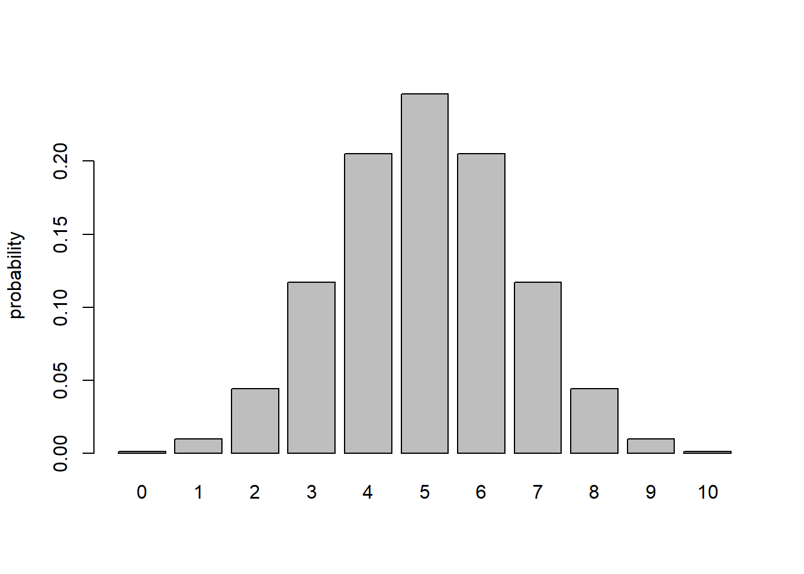
## Q: What is the *marginal likelihood* under this simple model for an observation of 2 mortalities out of 10?
## A:
dbinom(2,10,0.5)## [1] 0.04394531Q What is the marginal likelihood under this simple model for an observation of 2 mortalities out of 10? How about 3 mortalities?
A It is exactly 0.0439453. That is, there is no marginalizing to do since there is no free parameter to marginalize over.
Now let’s consider a more ‘complex’ model, where p is a free parameter (one additional free parameter relative to the simple model). First, let’s assume that the parameter p is assigned a uniform \(beta(1,1)\) prior across parameter space:
## Now we can consider a model whereby "p" is a free parameter
curve(dbeta(x,1,1)) # uniform prior on "p"What is the marginal likelihood of observing 2 mortalities under this model?
In other words, what is the average probability of observing 2 mortalities, averaged across all possible values of p???
Intuitively, because all values of p are equally likely, all possible observations (0 mortalities, 2 mortalities, N mortalities) should all be equally likely! That is, neither the likelihood function nor the prior distribution favors any particular observation (0 to 10) over any other.
We can do this mathematically…
For two observed mortalities, the marginal likelihood is:
# Compute the marginal likelihood of observing 2 mortalities
# ?integrate
binom2 <- function(x) dbinom(x=2,size=10,prob=x)
marginal_likelihood <- integrate(f=binom2,0,1)$value # use "integrate" function in R
marginal_likelihood # equal to 0.0909 = 1/11## [1] 0.09090909For three observed mortalities, the marginal likelihood (probability of observing a “3” across all possible values of p) is:
# Compute the marginal likelihood of observing 3 mortalities
binom3 <- function(x) dbinom(x=3,size=10,prob=x)
marginal_likelihood <- integrate(f=binom3,0,1)$value # use "integrate" function
marginal_likelihood # equal to 0.0909 = 1/11## [1] 0.09090909Basically, if p could be anything between 0 and 1, no particular observation is favored over any other prior to observing any real data:
# simulate data from the model across all possible values of the parameter "p"
lots=1000000
a_priori_data <- rbinom(lots,10,prob=rbeta(lots,1,1)) # no particular observation is favored
for_hist <- table(a_priori_data)/lots
barplot(for_hist,xlab="Potential Observation",ylab="Marginal likelihood")Therefore, since there are 11 possible observations (outcomes of the binomial distribution of size=10), the marginal likelihood of any particular data observation under the model with p as a free parameter should be 1/11 = 0.0909091.
Here is a visualization of the marginal likelihood across all possible data observations:
# Visualize the marginal likelihood of all possible observations
probs2 <- rep(1/11,times=11)
names(probs2) = 0:10
barplot(probs2,ylab="probability",ylim=c(0,1))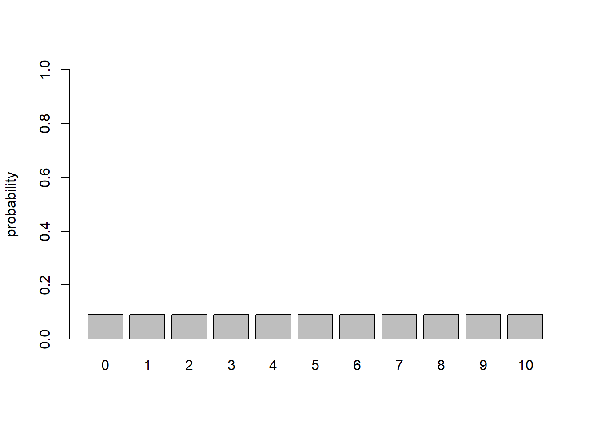
Now let’s overlay the marginal likelihoods for the simpler model:
# Overlay the marginal likelihood of the simpler model, with p fixed at 0.5
probs2 <- rep(1/11,times=11)
names(probs2) = 0:10
barplot(probs2,ylab="probability",ylim=c(0,1))
probs1 <- dbinom(0:10,10,0.5)
names(probs1) = 0:10
barplot(probs1,ylab="probability",add=T,col="red",density=20)
Assuming we observed 2 mortalities, what is the Bayes Factor? Which model is better?
# Finally, compute the bayes factor given that we observed 2 mortalities. Which model is better?
probs2 <- rep(1/11,times=11)
names(probs2) = 0:10
barplot(probs2,ylab="probability",ylim=c(0,1))
probs1 <- dbinom(0:10,10,0.5)
names(probs1) = 0:10
barplot(probs1,ylab="probability",add=T,col="red",density=20)
abline(v=3,col="green",lwd=4 )
BayesFactor = (1/11)/dbinom(2,10,0.5)
BayesFactor## [1] 2.068687Here, the Bayes factor of around 2 indicates that the data lend support to the more complex model!
What if the data instead were 3 mortalities? Which model is the best model?
# Compute the bayes factor given that we observed 3 mortalities. Which model is better now?
probs2 <- rep(1/11,times=11)
names(probs2) = 0:10
barplot(probs2,ylab="probability",ylim=c(0,1))
probs1 <- dbinom(0:10,10,0.5)
names(probs1) = 0:10
barplot(probs1,ylab="probability",add=T,col="red",density=20)
abline(v=4.3,col="green",lwd=4 )BayesFactor = dbinom(3,10,0.5)/(1/11)
BayesFactor## [1] 1.289063This time, The simpler model wins!!! That would never happen if we compared maximum likelihood estimates- the deviance of the (fitted) more highly-parameterized model will always be lower (i.e., the data likelihood at p=0.3 is higher than the data likelihood at p=0.5)! That’s why we have to penalize or regularize more highly-parameterized models.
We can visualize this! First of all, what is the maximum likelihood estimate for p under the model with 3 mortality observations?
# Visualize the likelihood ratio
# probs2 <- rep(1/11,times=11)
# names(probs2) = 0:10
# barplot(probs2,ylab="probability",ylim=c(0,1))
probs1 <- dbinom(0:10,10,0.5)
names(probs1) = 0:10
barplot(probs1,ylab="probability",col="red",density=20,ylim=c(0,1))
probs3 <- dbinom(0:10,10,0.3)
names(probs3) = 0:10
barplot(probs3,ylab="probability",add=T,col="green",density=10,angle = -25)
abline(v=4.3,col="green",lwd=4 )So clearly the likelihood ratio favors the more complex model (fitted parameter “p”) vs the simple, 0-parameter model!
What does the likelihood-ratio test say?
# LRT: simple model (p fixed at 0.5) vs complex model (p is free parameter)
Likelihood_simple <- dbinom(3,10,0.5)
Likelihood_complex <- dbinom(3,10,0.3)
Likelihood_simple## [1] 0.1171875Likelihood_complex## [1] 0.2668279-2*log(Likelihood_simple)--2*log(Likelihood_complex)## [1] 1.645658qchisq(0.95,1)## [1] 3.841459pchisq(1.64,1) # very high p value, simpler model is preferred## [1] 0.7996745What about AIC?
# AIC: simple model (p fixed at 0.5) vs complex model (p is free parameter)
AIC_simple <- -2*log(Likelihood_simple) + 2*0
AIC_complex <- -2*log(Likelihood_complex) + 2*1
AIC_simple## [1] 4.28796AIC_complex ## [1] 4.642303What about AICc?
\(AIC_c = AIC + \frac{2k(k+1)}{n-k-1}\)
### Alternatively, use AICc
AICc_simple <- -2*log(Likelihood_simple) + 0 + 0
AICc_complex <- -2*log(Likelihood_complex) + 1 + ((2*2)/(3-1-1))
AICc_simple## [1] 4.28796AICc_complex ## [1] 7.642303What about BIC?
# Alternatively, try BIC
BIC_simple <- -2*log(Likelihood_simple) + log(10)*0
BIC_complex <- -2*log(Likelihood_complex) + log(10)*1
BIC_simple## [1] 4.28796BIC_complex ## [1] 4.944888All these methods give the same basic answer- that the simple model is better, even though the complex model fits better!
Q How is the principle of parsimony naturally incorporated in the Bayes factor? That is, why don’t we need to impose a penalty term?
Deviance Information Criterion (DIC)
DIC is computed by default in JAGS and WinBUGS. It is analogous to other I-T metrics like AIC (and therefore easy to interpret and use)!
… but it is often unreliable for complex hierarchical models, so use caution when applying DIC to model selection problems…
Let’s run an example anyway…
First, let’s write a BUGS model for the fir data
# Bayesian model selection: Bolker's fir dataset
cat("
model {
### Likelihood
for(i in 1:n.obs){
expected.cones[i] <- a[wave[i]]*pow(DBH[i],b[wave[i]]) # power function: a*DBH^b
p[i] <- r[wave[i]] / (r[wave[i]] + expected.cones[i])
observed.cones[i] ~ dnegbin(p[i],r[wave[i]])
}
### Priors
for(j in 1:2){ # estimate separately for wave and non-wave
a[j] ~ dunif(0.001,2)
b[j] ~ dunif(0.5,4)
r[j] ~ dunif(0.5,5)
}
}
",file="BUGS_fir.txt")Then we need to package the data for JAGS
# Package the data for JAGS
data.package1 <- list(
observed.cones = fir$TOTCONES,
n.obs = nrow(fir),
wave = as.numeric(fir$WAVE_NON),
DBH = fir$DBH
)
#data.packageNow we make a function for generating initial values:
# Make a function for generating initial guesses
init.generator1 <- function(){ list(
a = runif(2, 0.2,0.5),
b = runif(2, 2,3),
r = runif(2, 1,2)
)
}
init.generator1()## $a
## [1] 0.2639883 0.4827500
##
## $b
## [1] 2.951072 2.872453
##
## $r
## [1] 1.332014 1.474701Then we can run the model!
# Run the model in JAGS
library(jagsUI) # load packages
library(coda)
library(lattice)
params.to.monitor <- c("a","b","r")
jags.fit1 <- jags(data=data.package1,inits=init.generator1,parameters.to.save=params.to.monitor,n.adapt=1000, n.iter=10000,model.file="BUGS_fir.txt",n.chains = 2,n.burnin = 2000,n.thin=5,parallel=TRUE )##
## Processing function input.......
##
## Done.
##
## Beginning parallel processing using 2 cores. Console output will be suppressed.
##
## Parallel processing completed.
##
## Calculating statistics.......
##
## Done.jagsfit1.mcmc <- jags.fit1$samples # extract "MCMC" object (coda package)
summary(jagsfit1.mcmc)##
## Iterations = 2005:10000
## Thinning interval = 5
## Number of chains = 2
## Sample size per chain = 1600
##
## 1. Empirical mean and standard deviation for each variable,
## plus standard error of the mean:
##
## Mean SD Naive SE Time-series SE
## a[1] 0.5394 0.4056 0.007171 0.097679
## a[2] 0.6399 0.3691 0.006525 0.036243
## b[1] 2.1864 0.3150 0.005568 0.057089
## b[2] 2.0070 0.2852 0.005041 0.027698
## r[1] 1.6518 0.1979 0.003498 0.003621
## r[2] 1.3362 0.2035 0.003597 0.003651
## deviance 2276.7626 3.8485 0.068032 0.348040
##
## 2. Quantiles for each variable:
##
## 2.5% 25% 50% 75% 97.5%
## a[1] 0.1042 0.2712 0.4146 0.6669 1.748
## a[2] 0.1746 0.3711 0.5583 0.8110 1.623
## b[1] 1.5577 1.9824 2.1929 2.3801 2.819
## b[2] 1.4671 1.8178 1.9974 2.2021 2.577
## r[1] 1.2860 1.5126 1.6465 1.7759 2.057
## r[2] 0.9846 1.1930 1.3207 1.4649 1.766
## deviance 2271.4162 2273.8904 2276.0349 2278.8218 2286.123#plot(jagsfit1.mcmc)# Visualize the model fit
plot(jagsfit1.mcmc)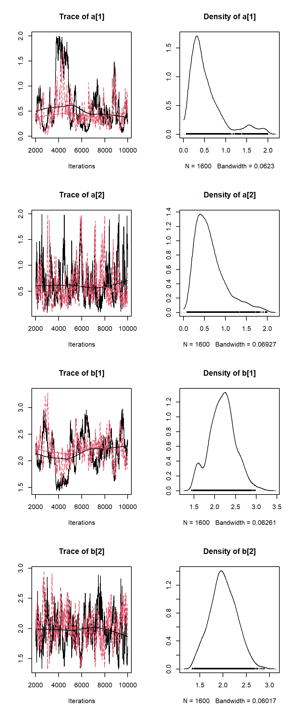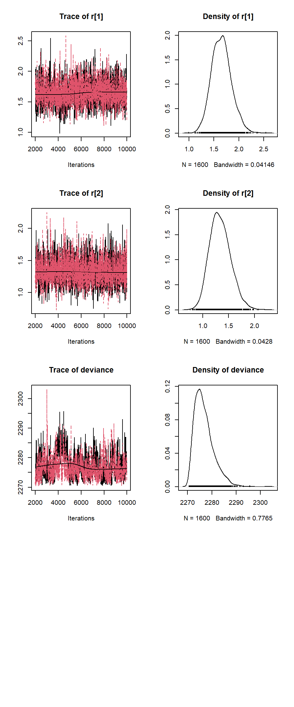
lattice::densityplot(jagsfit1.mcmc)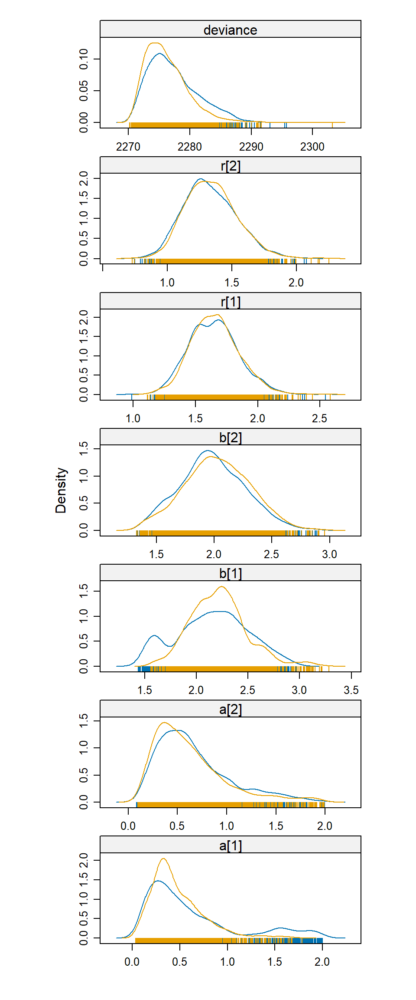
First of all, is there any evidence that the dispersion of cone data from wave sites is different than that of the non-wave sites?
hist(jags.fit1$sims.list$r[,1],main="dispersion param",ylab="Prob Density",xlab="dispersion param",freq = F,ylim=c(0,2),xlim=c(0.5,2.5))
hist(jags.fit1$sims.list$r[,2],density=20,col="green",add=T,freq=F)
legend("topright",col=c("green","white"),density=c(20,0),legend=c("wave","nonwave"),bty="n")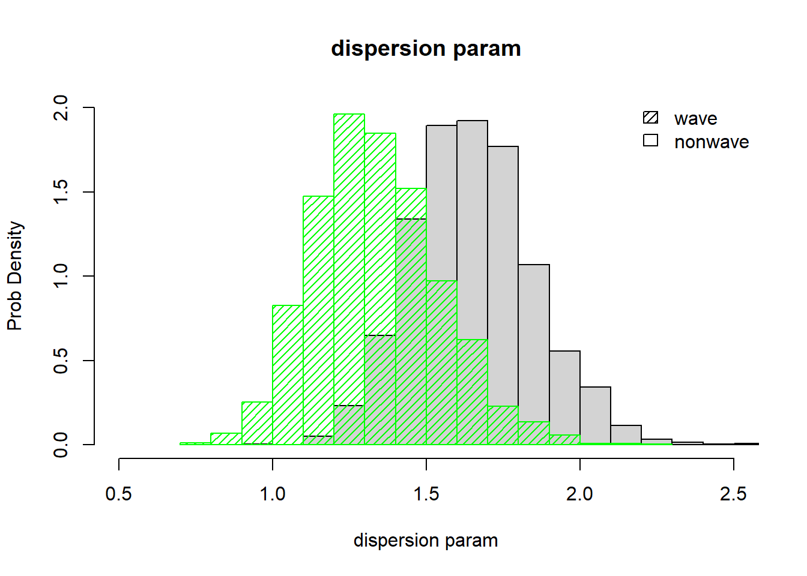
What is the DIC for this model?
# Extract the DIC for the full model!
DIC_full <- jags.fit1$DIC
DIC_full## [1] 2284.016Now let’s build the reduced model and compare DIC values!
# Build JAGS code for the reduced model --------------
cat("
model {
### Likelihood
for(i in 1:n.obs){
expected.cones[i] <- a*pow(DBH[i],b) # a*DBH^b
p[i] <- r / (r + expected.cones[i])
observed.cones[i] ~ dnegbin(p[i],r)
}
### Priors
a ~ dunif(0.001,2)
b ~ dunif(0.5,4)
r ~ dunif(0.5,5)
}
",file="BUGS_fir_reduced.txt")Then we need to package the data for JAGS
# Package data for JAGS
data.package2 <- list(
observed.cones = fir$TOTCONES,
n.obs = nrow(fir),
#wave = as.numeric(fir$WAVE_NON),
DBH = fir$DBH
)Now we make a function for generating initial values:
# Function for generating initial guesses for all params
init.generator2 <- function(){ list(
a = runif(1, 0.2,0.5),
b = runif(1, 2,3),
r = runif(1, 1,2)
)
}
init.generator2()## $a
## [1] 0.307953
##
## $b
## [1] 2.299594
##
## $r
## [1] 1.667578Then we can run the model!
# Run the reduced model and visualize the JAGS fit
params.to.monitor <- c("a","b","r")
jags.fit2 <- jags(data=data.package2,inits=init.generator2,parameters.to.save=params.to.monitor,n.adapt=1000, n.iter=10000,model.file="BUGS_fir_reduced.txt",n.chains = 2,n.burnin = 2000,n.thin=5 )##
## Processing function input.......
##
## Done.
##
## Compiling model graph
## Resolving undeclared variables
## Allocating nodes
## Graph information:
## Observed stochastic nodes: 242
## Unobserved stochastic nodes: 3
## Total graph size: 837
##
## Initializing model
##
## Adaptive phase, 1000 iterations x 2 chains
## If no progress bar appears JAGS has decided not to adapt
##
##
## Burn-in phase, 2000 iterations x 2 chains
##
##
## Sampling from joint posterior, 8000 iterations x 2 chains
##
##
## Calculating statistics.......
##
## Done.jagsfit2.mcmc <- jags.fit2$samples # "MCMC" object (coda package)
summary(jagsfit2.mcmc)##
## Iterations = 3005:11000
## Thinning interval = 5
## Number of chains = 2
## Sample size per chain = 1600
##
## 1. Empirical mean and standard deviation for each variable,
## plus standard error of the mean:
##
## Mean SD Naive SE Time-series SE
## a 0.3906 0.1417 0.002505 0.012640
## b 2.2349 0.1695 0.002996 0.015070
## r 1.5062 0.1449 0.002562 0.002562
## deviance 2275.0823 2.4262 0.042890 0.095397
##
## 2. Quantiles for each variable:
##
## 2.5% 25% 50% 75% 97.5%
## a 0.1779 0.2847 0.3725 0.4766 0.7148
## b 1.9218 2.1119 2.2281 2.3504 2.5760
## r 1.2422 1.4056 1.4986 1.6005 1.8162
## deviance 2272.2667 2273.3250 2274.5216 2276.1849 2281.3700plot(jagsfit2.mcmc[,"a"])plot(jagsfit2.mcmc[,"b"])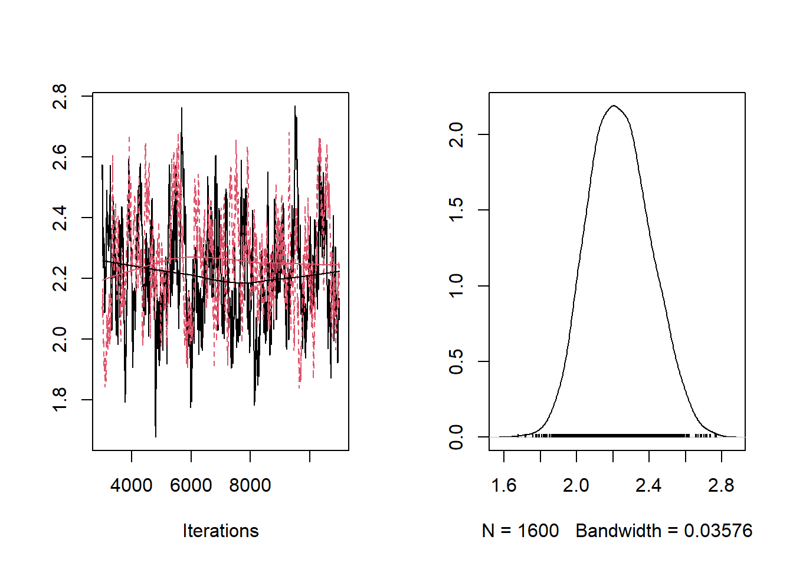
plot(jagsfit2.mcmc[,"r"])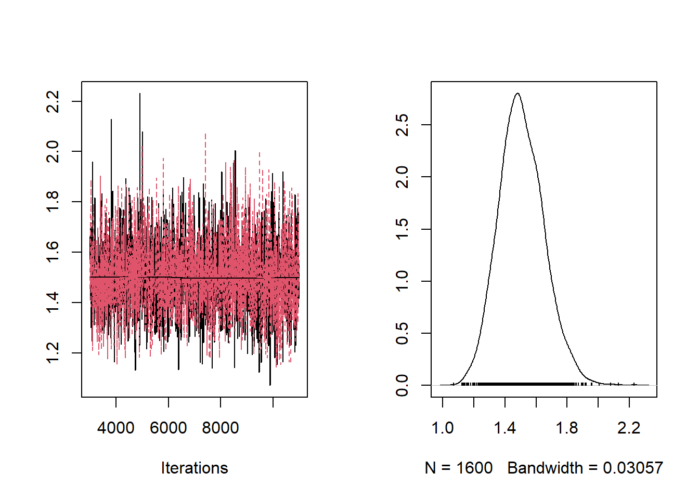
lattice::densityplot(jagsfit2.mcmc)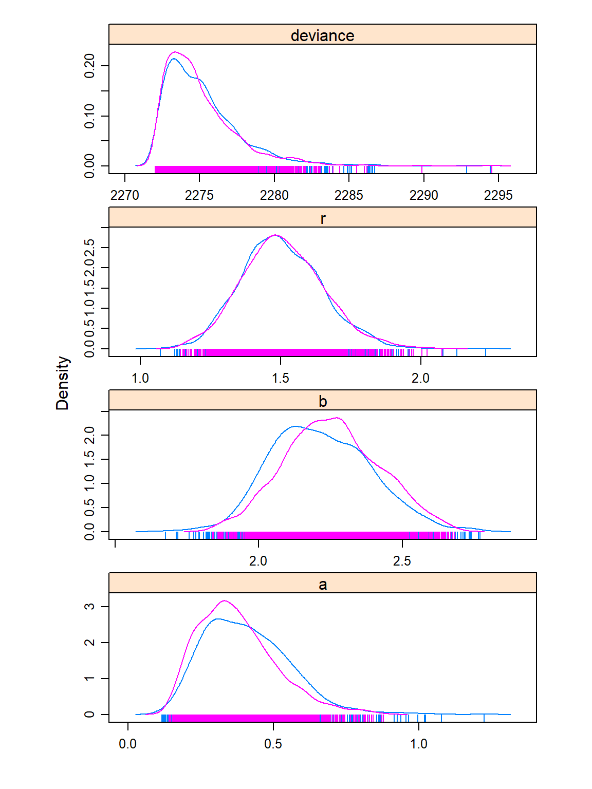
What is the DIC for this model?
# Compute DIC
DIC_reduced <- jags.fit2$DIC
DIC_reduced## [1] 2278.023DIC_full## [1] 2284.016Is there a good reason to prefer the full model now?
What would happen if we re-ran the model? Would the DIC be the same?
What would happen if we changed the priors? Would the DIC be the same?
What about AIC? Is the AIC the same every time?
Widely Applicable Information Criterion (WAIC)
The WAIC (also known as the Wattanabe-Akaike information criterion, or the ‘widely applicable information criterion’) metric is also interpretable just like AIC, BIC and DIC and allows us to compare models fitted in a Bayesian framework via MCMC.
The WAIC metric, while not computed by default in JAGS, is more widely applicable more widely than DIC.
Let’s compute the WAIC for the above example, and see how it compares! For this, we will use the “loo” package in R.
# Use WAIC for bayesian model selection!
library(loo) # load the "loo" package, which allows us to compute WAIC from JAGS output'
####
# First, re-make the JAGS code, this time recording the likelihood as a derived parameter
cat("
model {
### Likelihood
for(i in 1:n.obs){
expected.cones[i] <- a[wave[i]]*pow(DBH[i],b[wave[i]]) # power function: a*DBH^b
p[i] <- r[wave[i]] / (r[wave[i]] + expected.cones[i])
observed.cones[i] ~ dnegbin(p[i],r[wave[i]])
LogLik[i] <- log(dnegbin(observed.cones[i],p[i],r[wave[i]])) # add log likelihood computation for each observation!
}
### Priors
for(j in 1:2){ # estimate separately for wave and non-wave
a[j] ~ dunif(0.001,2)
b[j] ~ dunif(0.5,4)
r[j] ~ dunif(0.5,5)
}
}
",file="BUGS_fir.txt")
# Build JAGS code for the reduced model ------------
cat("
model {
### Likelihood
for(i in 1:n.obs){
expected.cones[i] <- a*pow(DBH[i],b) # a*DBH^b
p[i] <- r / (r + expected.cones[i])
observed.cones[i] ~ dnegbin(p[i],r)
LogLik[i] <- log(dnegbin(observed.cones[i],p[i],r)) # add log likelihood computation for each observation!
}
### Priors
a ~ dunif(0.001,2)
b ~ dunif(0.5,4)
r ~ dunif(0.5,5)
}
",file="BUGS_fir_reduced.txt")# re-fit the models
params.to.monitor <- c("a","b","r","LogLik") # now monitor the log likelihood
jags.fit1 <- jags(data=data.package1,inits=init.generator1,parameters.to.save=params.to.monitor,n.adapt=1000,n.iter=10000,model.file="BUGS_fir.txt",n.chains = 2,n.burnin = 2000,n.thin=5 )##
## Processing function input.......
##
## Done.
##
## Compiling model graph
## Resolving undeclared variables
## Allocating nodes
## Graph information:
## Observed stochastic nodes: 242
## Unobserved stochastic nodes: 6
## Total graph size: 1690
##
## Initializing model
##
## Adaptive phase, 1000 iterations x 2 chains
## If no progress bar appears JAGS has decided not to adapt
##
##
## Burn-in phase, 2000 iterations x 2 chains
##
##
## Sampling from joint posterior, 8000 iterations x 2 chains
##
##
## Calculating statistics.......
##
## Done.jags.fit2 <- jags(data=data.package2,inits=init.generator2,parameters.to.save=params.to.monitor,n.adapt=1000,n.iter=10000,model.file="BUGS_fir_reduced.txt",n.chains = 2,n.burnin = 2000,n.thin=5 )##
## Processing function input.......
##
## Done.
##
## Compiling model graph
## Resolving undeclared variables
## Allocating nodes
## Graph information:
## Observed stochastic nodes: 242
## Unobserved stochastic nodes: 3
## Total graph size: 1313
##
## Initializing model
##
## Adaptive phase, 1000 iterations x 2 chains
## If no progress bar appears JAGS has decided not to adapt
##
##
## Burn-in phase, 2000 iterations x 2 chains
##
##
## Sampling from joint posterior, 8000 iterations x 2 chains
##
##
## Calculating statistics.......
##
## Done.# Compute WAIC!
loglik_full <- jags.fit1$sims.list$LogLik
loglik_red <- jags.fit2$sims.list$LogLik
waic_full <- waic(loglik_full)## Warning:
## 1 (0.4%) p_waic estimates greater than 0.4. We recommend trying loo instead.waic_red <- waic(loglik_red)
waic_full$estimates["waic",]## Estimate SE
## 2283.15099 29.81704waic_red$estimates["waic",]## Estimate SE
## 2278.35750 29.97966loo_compare(waic_full, waic_red)## elpd_diff se_diff
## model2 0.0 0.0
## model1 -2.4 2.0Explicit Bayesian model selection
Another cool, sometimes useful, but not perfect, method of Bayesian model selection is to write the model selection directly into the JAGS code!
# Explicit Bayesian model selection
cat("
model {
### Likelihood for model 1: full
for(i in 1:n.obs){
expected.cones[i,1] <- a1[wave[i]]*pow(DBH[i],b1[wave[i]]) # a*DBH^b
spread.cones[i,1] <- r1[wave[i]]
p[i,1] <- spread.cones[i,1] / (spread.cones[i,1] + expected.cones[i,1])
observed.cones[i,1] ~ dnegbin(p[i,1],spread.cones[i,1])
predicted.cones[i,1] ~ dnegbin(p[i,1],spread.cones[i,1])
SE_obs[i,1] <- pow(observed.cones[i,1]-expected.cones[i,1],2)
SE_pred[i,1] <- pow(predicted.cones[i,1]-expected.cones[i,1],2)
}
### Priors, model 1
for(j in 1:2){ # estimate separately for wave and non-wave
a1[j] ~ dunif(0.001,2)
b1[j] ~ dunif(0.5,4)
r1[j] ~ dunif(0.5,5)
}
### Likelihood for model 2: reduced
for(i in 1:n.obs){
expected.cones[i,2] <- a2*pow(DBH[i],b2) # a*DBH^b
spread.cones[i,2] <- r2
p[i,2] <- spread.cones[i,2] / (spread.cones[i,2] + expected.cones[i,2])
observed.cones[i,2] ~ dnegbin(p[i,2],spread.cones[i,2])
predicted.cones[i,2] ~ dnegbin(p[i,2],spread.cones[i,2])
SE_obs[i,2] <- pow(observed.cones[i,2]-expected.cones[i,2],2)
SE_pred[i,2] <- pow(predicted.cones[i,2]-expected.cones[i,2],2)
}
### Priors, model 2
a2 ~ dunif(0.001,2)
b2 ~ dunif(0.5,4)
r2 ~ dunif(0.5,5)
### Likelihood for model 3: constant a and b
for(i in 1:n.obs){
expected.cones[i,3] <- a3*pow(DBH[i],b3) # a*DBH^b
spread.cones[i,3] <- r3[wave[i]]
p[i,3] <- spread.cones[i,3] / (spread.cones[i,3] + expected.cones[i,3])
observed.cones[i,3] ~ dnegbin(p[i,3],spread.cones[i,3])
predicted.cones[i,3] ~ dnegbin(p[i,3],spread.cones[i,3])
SE_obs[i,3] <- pow(observed.cones[i,3]-expected.cones[i,3],2)
SE_pred[i,3] <- pow(predicted.cones[i,3]-expected.cones[i,3],2)
}
SSE_obs[1] <- sum(SE_obs[,1])
SSE_pred[1] <- sum(SE_pred[,1])
SSE_obs[2] <- sum(SE_obs[,2])
SSE_pred[2] <- sum(SE_pred[,2])
SSE_obs[3] <- sum(SE_obs[,3])
SSE_pred[3] <- sum(SE_pred[,3])
### Priors, model 3
for(j in 1:2){ # estimate separately for wave and non-wave
r3[j] ~ dunif(0.5,5)
}
a3 ~ dunif(0.001,2)
b3 ~ dunif(0.5,4)
#####################
### SELECT THE BEST MODEL!!!
#####################
for(i in 1:n.obs){
observed.cones2[i] ~ dnegbin(p[i,selected],spread.cones[i,selected])
predicted.cones2[i] ~ dnegbin(p[i,selected],spread.cones[i,selected]) # for posterior predictive check!
SE2_obs[i] <- pow(observed.cones2[i]-expected.cones[i,selected],2)
SE2_pred[i] <- pow(predicted.cones2[i]-expected.cones[i,selected],2)
}
SSE2_obs <- sum(SE2_obs[])
SSE2_pred <- sum(SE2_pred[])
### Priors
# model selection...
prior[1] <- 1/3
prior[2] <- 1/3 # you can put substantially more weight because fewer parameters (there are more rigorous ways to do this!!)
prior[3] <- 1/3
selected ~ dcat(prior[])
}
",file="BUGS_fir_modelselection.txt")Now we can use MCMC to find which model we put our beliefs in after we account for our data!
Then we need to package the data for JAGS
# Package the data for JAGS
data.package3 <- list(
observed.cones = matrix(rep(fir$TOTCONES,times=3),ncol=3,byrow=F),
observed.cones2 = fir$TOTCONES,
n.obs = nrow(fir),
wave = as.numeric(fir$WAVE_NON),
#n.models = 3,
DBH = fir$DBH
)
#data.packageThen we can run the model!
# Run JAGS
params.to.monitor <- c("a1","b1","r1","a2","b2","r2","a3","b3","r3","selected","predicted.cones2","predicted.cones","SSE_obs","SSE_pred","SSE2_obs","SSE2_pred")
jags.fit3 <- jags(data=data.package3,parameters.to.save=params.to.monitor,n.adapt=1000,n.iter=5000,model.file="BUGS_fir_modelselection.txt",n.chains = 2,n.burnin = 1000,n.thin=2 )##
## Processing function input.......
##
## Done.
##
## Compiling model graph
## Resolving undeclared variables
## Allocating nodes
## Graph information:
## Observed stochastic nodes: 968
## Unobserved stochastic nodes: 982
## Total graph size: 7770
##
## Initializing model
##
## Adaptive phase, 1000 iterations x 2 chains
## If no progress bar appears JAGS has decided not to adapt
##
##
## Burn-in phase, 1000 iterations x 2 chains
##
##
## Sampling from joint posterior, 4000 iterations x 2 chains
##
##
## Calculating statistics.......
##
## Done.jagsfit3.mcmc <- jags.fit3$samples # convert to "MCMC" object (coda package)
BUGSlist <- as.data.frame(jags.fit3$sims.list)
#summary(jagsfit.mcmc)
#plot(jagsfit.mcmc)# Visualize the model fit
#plot(jagsfit.mcmc[,"selected"])
plot(jagsfit3.mcmc[,"a1[1]"])plot(jagsfit3.mcmc[,"a1[2]"])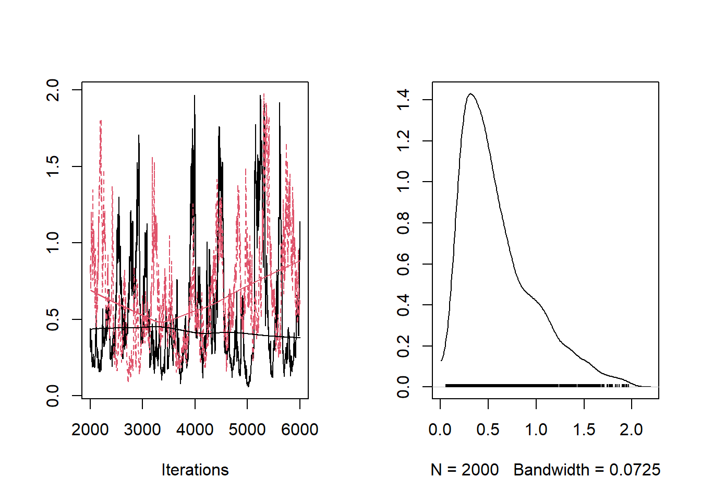
plot(jagsfit3.mcmc[,"a2"])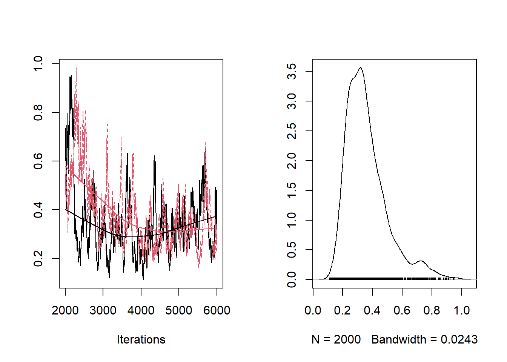
plot(jagsfit3.mcmc[,"a3"])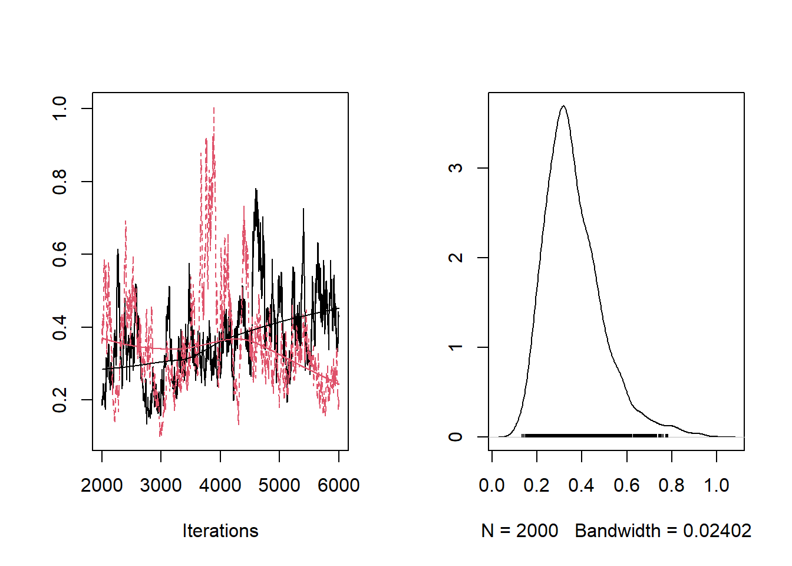
plot(jagsfit3.mcmc[,"r1[1]"])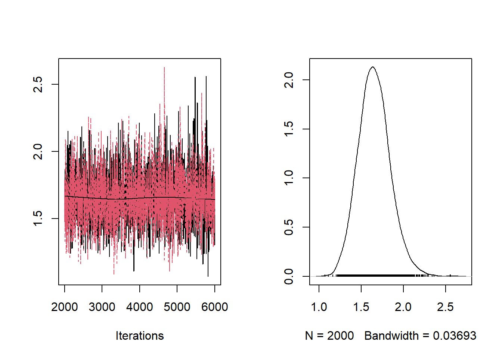
plot(jagsfit3.mcmc[,"r1[2]"])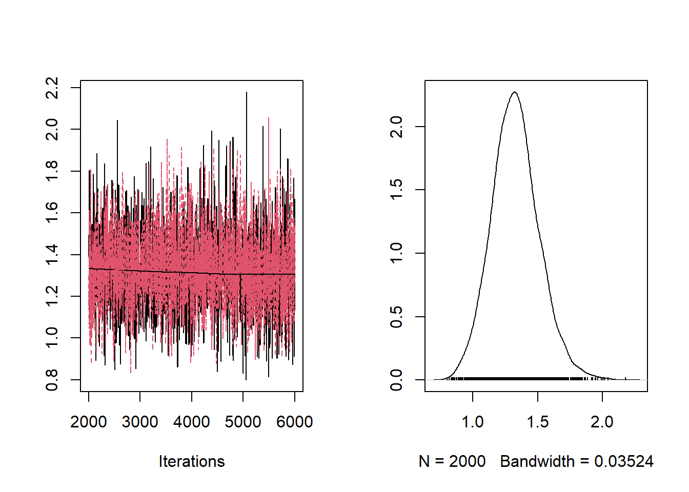
plot(jagsfit3.mcmc[,"r2"])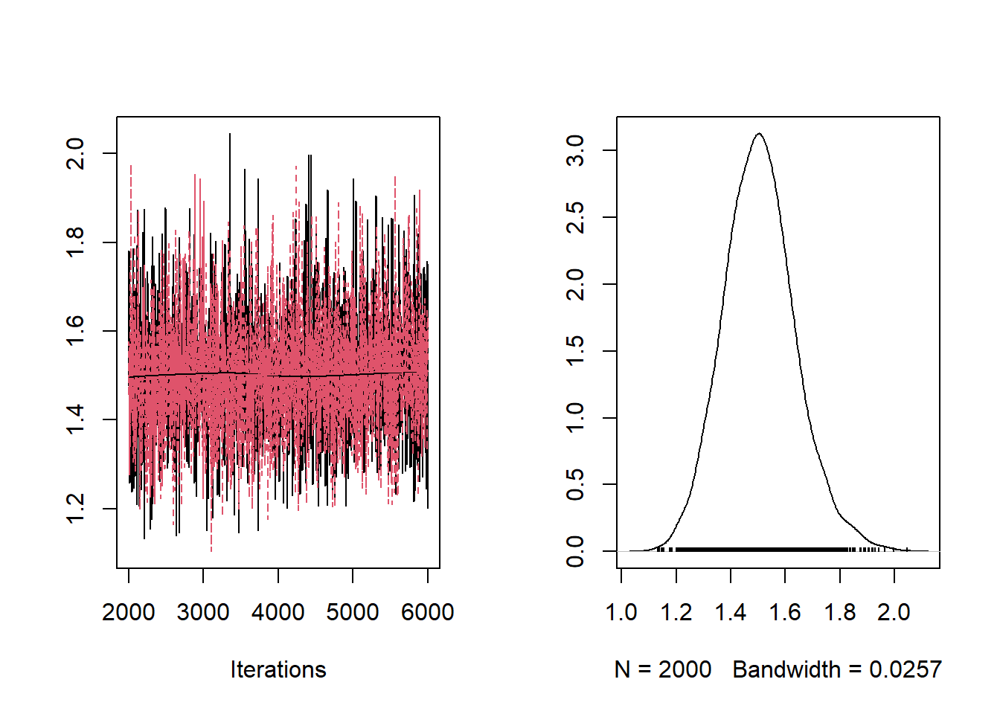
plot(jagsfit3.mcmc[,"r3[1]"])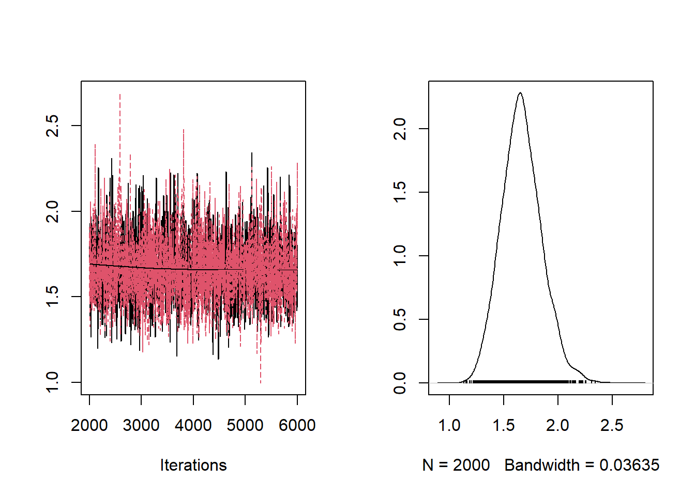
Let’s look at the model selection (that’s the whole point!!)
# Perform explicit model selection
n.iterations <- length(jags.fit3$sims.list$selected)
selected <- table(jags.fit3$sims.list$selected)
names(selected) <- c("Full model","No wave","Fixed a&b")
selected## Full model No wave Fixed a&b
## 1067 1269 1664barplot(selected/n.iterations,ylab="Degree of belief")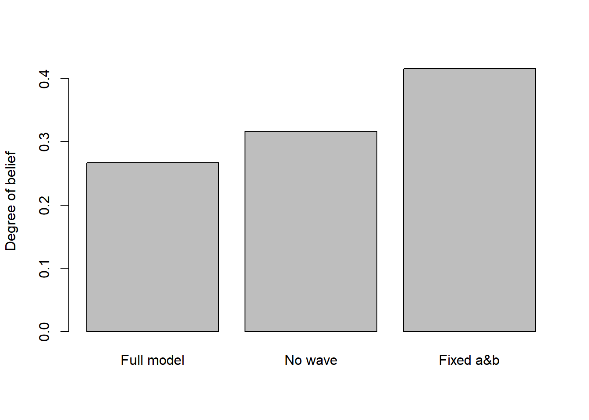
Evaluate model fit
Now we can look at model fit! We will use the same method we used in lab- the posterior predictive check…
We can write a for loop to extract the prediction results for each model (and for the model-averaged model):
First let’s just look at the model predictions vs the observed data. First, model 1
# Goodness of fit
n.data <- length(fir$DBH)
plot(fir$TOTCONES~fir$DBH,ylim=c(0,900),cex=2)
for(d in 1:n.data){
tofind <- sprintf("predicted.cones[%s,1]",d)
model1 <- as.vector(jagsfit3.mcmc[,tofind])
points(rep(fir$DBH[d],times=100),sample(model1[[1]],100),pch=20,col="gray",cex=0.4)
}Next, model 2 (reduced):
# Perform posterior predictive check
plot(fir$TOTCONES~fir$DBH,ylim=c(0,900),cex=2)
for(d in 1:n.data){
tofind <- sprintf("predicted.cones[%s,2]",d)
model1 <- as.vector(jagsfit3.mcmc[,tofind])
points(rep(fir$DBH[d],times=100),sample(model1[[1]],100),pch=20,col="gray",cex=0.4)
}And model 3 (fixed a and b):
plot(fir$TOTCONES~fir$DBH,ylim=c(0,900),cex=2)
for(d in 1:n.data){
tofind <- sprintf("predicted.cones[%s,3]",d)
model1 <- as.vector(jagsfit3.mcmc[,tofind])
points(rep(fir$DBH[d],times=100),sample(model1[[1]],100),pch=20,col="gray",cex=0.4)
}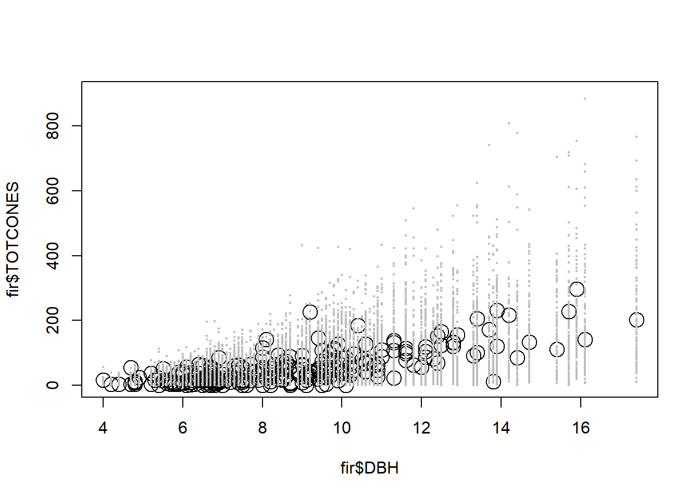
Clearly all the models seem to fit okay… But, it seems like there is more prediction error than is necessary… Let’s run a posterior predictive check!
For model 1:
# Posterior Predictive Checks!
plot(as.vector(jagsfit3.mcmc[,"SSE_pred[1]"][[1]])~as.vector(jagsfit3.mcmc[,"SSE_obs[1]"][[1]]),xlab="SSE, real data",ylab="SSE, perfect data",main="Posterior Predictive Check")
abline(0,1,col="red")p.value=length(which(as.vector(jagsfit3.mcmc[,"SSE_pred[1]"][[1]])>as.vector(jagsfit3.mcmc[,"SSE_obs[1]"][[1]])))/length(as.vector(jagsfit3.mcmc[,"SSE_pred[1]"][[1]]))
p.value ## [1] 0.997plot(as.vector(jagsfit3.mcmc[,"SSE_pred[2]"][[1]])~as.vector(jagsfit3.mcmc[,"SSE_obs[2]"][[1]]),xlab="SSE, real data",ylab="SSE, perfect data",main="Posterior Predictive Check")
abline(0,1,col="red")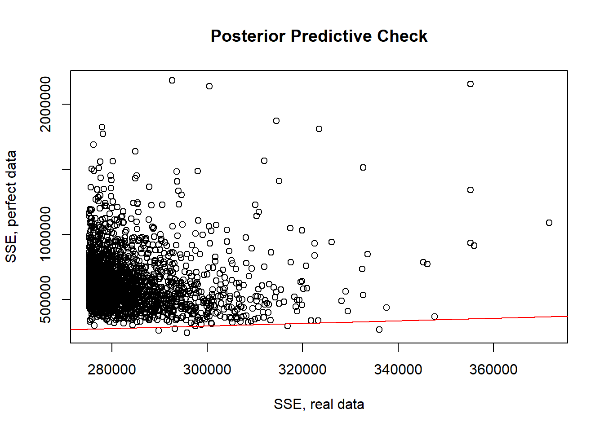
p.value=length(which(as.vector(jagsfit3.mcmc[,"SSE_pred[2]"][[1]])>as.vector(jagsfit3.mcmc[,"SSE_obs[2]"][[1]])))/length(as.vector(jagsfit3.mcmc[,"SSE_pred[2]"][[1]]))
p.value ## [1] 0.9975plot(as.vector(jagsfit3.mcmc[,"SSE_pred[3]"][[1]])~as.vector(jagsfit3.mcmc[,"SSE_obs[3]"][[1]]),xlab="SSE, real data",ylab="SSE, perfect data",main="Posterior Predictive Check")
abline(0,1,col="red")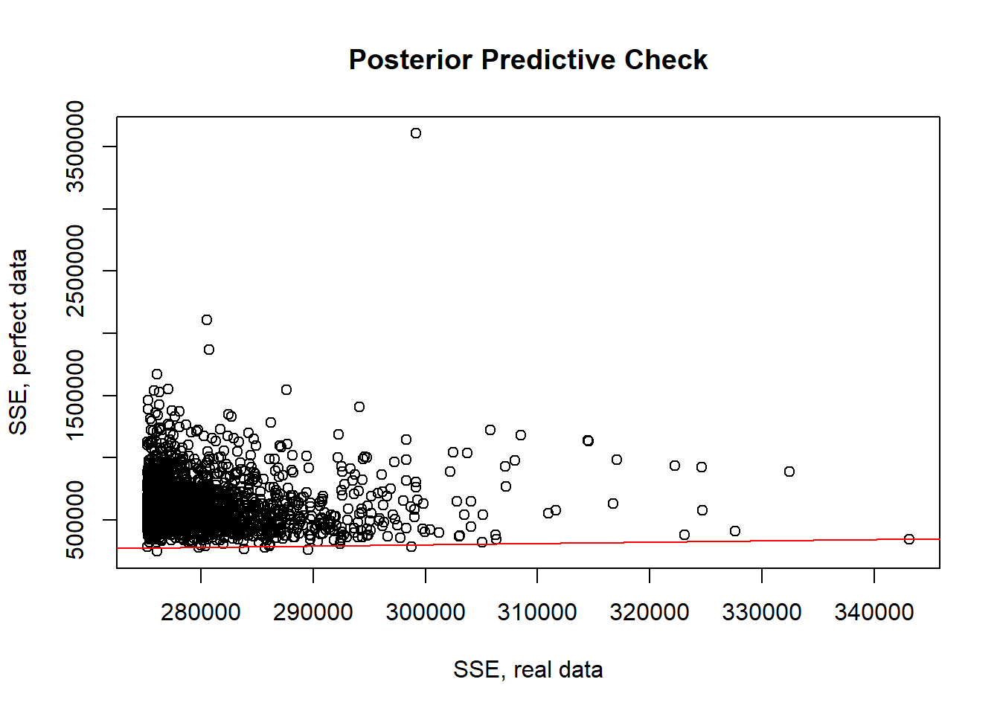
p.value=length(which(as.vector(jagsfit3.mcmc[,"SSE_pred[3]"][[1]])>as.vector(jagsfit3.mcmc[,"SSE_obs[3]"][[1]])))/length(as.vector(jagsfit3.mcmc[,"SSE_pred[3]"][[1]]))
p.value ## [1] 0.9965Interesting- the model seems to not fit very well!
Okay that’s it for model selection, now let’s move on to:
Model averaging
The fact that model selection is such a big deal in ecology and environmental science indicates that we are rarely certain about which model is the best model. Even after constructing an AIC table we may be very unsure about which model is the “true” model.
The AIC weights tell us in essence how much we “believe” in each model. This is a very Bayesian interpretation, but model averaging really is best thought of in a Bayesian context.
One way to do model averaging relies on AIC weights. Basically we take the set of predictions from each model independently and weight them by the Akaike weight. There is a literature on this and R packages for helping (see package ‘AICcmodavg’)
When should you use model-averaged parameter estimates
Really never in my opinion- can be useful for prediction but not useful (even misleading) if you are trying to estimate effect sizes!
The Bayesian version!
We can use the results from the JAGS code above to easily generate Bayesian model-averaged predictions! JAGS makes it relatively simple and straightforward to do model averaging in a Bayesian context!
Look at the predictions for the model averaged model:
plot(fir$TOTCONES~fir$DBH,ylim=c(0,900),cex=2)
for(d in 1:n.data){
tofind <- sprintf("predicted.cones2[%s]",d)
model1 <- as.vector(jagsfit3.mcmc[,tofind])
points(rep(fir$DBH[d],times=100),sample(model1[[1]],100),pch=20,col="gray",cex=0.4)
}Note that these predictions naturally incorporate both parameter uncertainty and structural (model selection) uncertainty!
We can do a posterior predictive check with the model-averaged model!
# Posterior predictive check with model-averaged model!
plot(as.vector(jagsfit3.mcmc[,"SSE2_pred"][[1]])~as.vector(jagsfit3.mcmc[,"SSE2_obs"][[1]]),xlab="SSE, real data",ylab="SSE, perfect data",main="Posterior Predictive Check")
abline(0,1,col="red")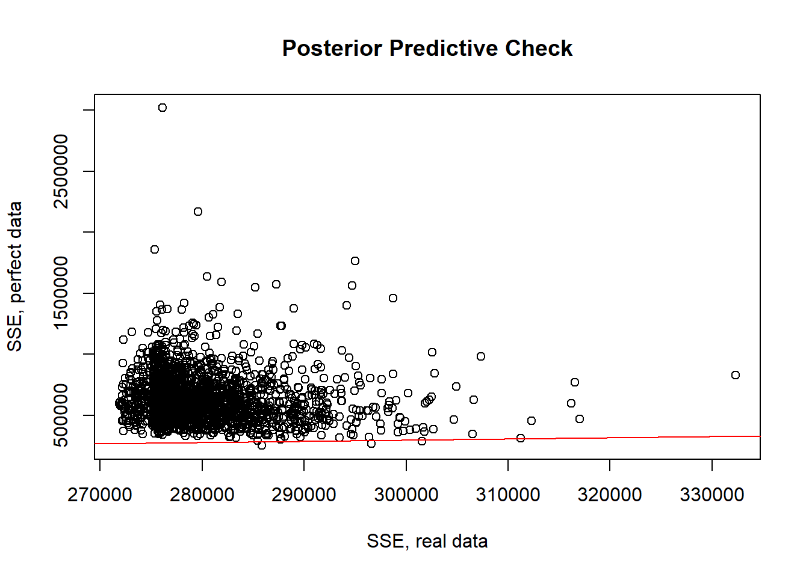
p.value=length(which(as.vector(jagsfit3.mcmc[,"SSE2_pred"][[1]])>as.vector(jagsfit3.mcmc[,"SSE2_obs"][[1]])))/length(as.vector(jagsfit3.mcmc[,"SSE2_pred"][[1]]))
p.value ## [1] 0.9985